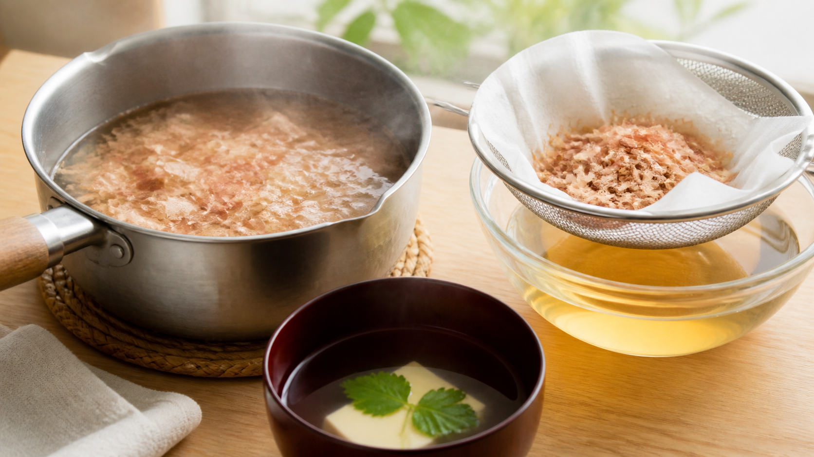

花かつおは2分でこす。煮続けるほど「うま味」だけが増えるわけではない
鍋へ花かつおを入れると、湯気と一緒に香ばしい匂いが立ち上がる。
「もう少し煮れば、もっと濃くておいしくなるかも」と思い、そのまま5分、10分。確かに味は強くなる。でも、最初に感じた軽やかな香りは薄れ、魚っぽい後味が目立つことがある。
これは失敗というより、うま味、香り、雑味が同じ速さでは動かないために起きる。
今日の結論
薄く削った花かつおで、香りのよい一番だしを取りたいなら、沸騰した湯の火を止めて花かつおを入れ、2分でこすところから始めるのがよい。
長く煮れば水に溶ける成分は増える。しかし、「溶けた成分が多い」と「好ましい香りが強い」は同じではない。香りの一部は短時間で十分に出たあと、湯気と一緒に逃げる。さらに長時間の加熱では、別の加熱香も生まれる。
だから、短時間のだしは薄いのではない。香りを残したまま、取り出す成分を選んだだしと考えると分かりやすい。
花かつおは、薄いから仕事が速い
花かつおは、木のように硬いかつお節を紙のように薄く削ったものだ。水に触れる面が広いため、味の成分が短時間で湯へ移る。
物質が濃い場所から薄い場所へ広がる動きを拡散（かくさん）という。角砂糖より粉砂糖のほうが早く溶けるように、同じ重さのかつお節でも、薄く削るほど水と触れる面が増え、成分が移りやすくなる。
切削形状の異なるかつお節を比べた2017年の研究発表では、薄削り、厚削り、粗粉砕品から3％のだしを取り、成分と官能評価を調べた。薄削りはくん煙の香り、厚削りは肉のような香り、粗粉砕品は酸味、苦味、雑味が強く評価された。粗粉砕品は乳酸やヒスチジンなど、測った成分の溶出量も多かった。
ここが面白いところだ。たくさん溶けた試料ほど、必ず好まれたわけではない。吸い物とみそ汁の好みには個人差が大きく、削り方の間で明確な優劣は出なかった。
成分量の多さは、おいしさの順位表ではない。
香りは1分で山を作り、その後は形を変える
かつおだしの香りは、鍋の中だけに残るわけではない。湯気へ乗り、鼻へ届き、そのまま部屋へ逃げていく。
水から空気へ移りやすい性質を揮発（きはつ）という。香水のふたを開けると、液体に触れていなくても匂いが届くのと同じ動きだ。
1975年の加熱実験では、かつお節だしの湯気側に出た香気成分を測定した。確認された中性成分の大部分とフェノール成分は、沸騰水浴で1分加熱したときに最も多く、その後は加熱時間が長くなるほど減る傾向を示した。開放して加熱した条件では、香りがかなり外へ逃げることも確認された。
これは古い単一研究で、現在の市販花かつおを家庭の鍋で2分置く方法と完全に同じではない。ただし、「長く煮るほど香りも比例して増える」という考えには合わない。
さらに、長い加熱は香りを減らすだけではない。1989年の研究では、脱臭したかつお節の水だしを長時間加熱すると、ピロールアルデヒド類や含硫・含窒素化合物など、新しい加熱香が少量ずつ生まれた。1時間単位の実験なので、家庭の2分と10分の差を直接示すものではない。それでも、加熱中の香りが「減るだけ」でなく、別の香りへ組み替わることは分かる。
30分煮た花かつおで、雑風味が出た理由
8種類の魚節だしを同じ条件で評価した研究では、厚削り向けの30分抽出へ条件をそろえた。その結果、薄削りの花かつおは「ツナ」「干物」「生臭さ・血合」「金属臭・油の酸化臭・焼き魚」「うま味」が強い側へ分類された。
研究者は、薄削りの花かつおは本来10分以内の短時間抽出が一般的で、30分抽出したため雑風味が出た可能性を指摘している。
ただし、この研究は花かつおを2分、10分、30分と並べて比べた試験ではない。異なる魚節を同じ30分条件で評価した結果からの考察だ。だから「10分を1秒超えたら雑味が出る」とは言えない。
厚削りは話が別だ。そばつゆ用の厚削りを120分まで煮た研究では、水に溶ける成分は60〜90分でほぼ出そろい、それ以降は抽出より煮詰めによる濃縮が中心だと考えられた。薄削りの一番だしと、厚削りの濃いそばだしを同じ時計で測ってはいけない。
家庭では「20g、1L、2分」を基準にする
農林水産省が紹介する合わせだしは、水1L、かつお節20gを使い、沸騰後にかつお節を加えて火を止め、2分置いてこす方法だ。
今回は時間の違いを見やすくするため、昆布を使わないかつおだしへ簡略化する。
材料（作りやすい量）
- 水 1L
- 花かつお 20g
作り方
- 鍋へ水1Lを入れ、しっかり沸騰させる。
- 火を止め、花かつお20gを一度に広げて入れる。強くかき混ぜない。
- ふたをせず、2分待つ。
- ボウルへざるを重ね、清潔なキッチンペーパーを敷いて静かにこす。
- 花かつおを強く絞らず、自然に落ちるだしを受ける。
このだしは、吸い物、みそ汁、茶碗蒸しのように香りを感じたい料理へ向く。煮物や濃いめんつゆに使うなら、花かつおを長く煮続けるより、厚削りを選ぶか、短時間だしの使用量を増やすほうが狙いをそろえやすい。
2分と10分を、同じ濃さで比べる
自分の舌で確かめるなら、小鍋を二つ用意する。
- A：水300g、花かつお6g。沸騰後に火を止め、2分でこす
- B：水300g、花かつお6g。弱く沸く状態で10分加熱してこす
Bは水が蒸発する。そのままでは「時間」と「濃さ」を同時に比べてしまう。こした後に重さを量り、冷ました湯を足して、AとBを同じ重さへ戻す。
比べるのは、口へ入れる前の立ち上がる香り、うま味、酸味、苦味、魚っぽい後味の五つ。二つの温度をそろえてから飲む。熱さが違うと、香りの立ち方まで変わるからだ。
この飲み比べは家庭実験であり、成分を測る検査ではない。それでも、自分が買っている花かつおで「長く煮たほうが本当に好みか」を判断できる。
保存するなら、鍋のまま放置しない
だしは水分が多く、常温保存を前提にした食品ではない。作ったらできるだけその日のうちに使う。
残す場合は、清潔な浅い容器へ小分けし、粗熱が取れたら早めに冷蔵する。農林水産省は、家庭の調理済み食品を粗熱が取れた後に密閉し、早めに冷蔵・冷凍するよう案内している。冷蔵しても香りと安全性が保たれ続けるわけではないため、翌日までを目安に使い切る。長く保存するなら、一回分ずつ冷凍する。
酸っぱい匂い、濁り、ぬめりなど普段と違う変化があれば、味見で確かめず捨てる。
煮る時間を足す前に、削り方を見る
花かつおは、短時間で香りを取るための薄削りだ。
濃さが足りないとき、時計だけを延ばすと、欲しかった香りまで変わる。まず花かつおの量を量り、2分でこす。それでも力強さが欲しければ、量を増やすか厚削りへ替える。
薄削りは2分、濃い長時間だしは厚削り。時間より先に、かつお節の形を選ぼう。
参考文献
- 塩崎啓子ほか. 加熱による鰹節だし汁低沸点香気成分の変化. 家政学雑誌. 1975;26(5):383-387. https://doi.org/10.11428/jhej1951.26.383
- 小泉幸道ほか. 加熱によるかつお節だし汁の香気形成. 日本家政学会誌. 1989;40(5):341-346. https://doi.org/10.11428/jhej1987.40.341
- 有冨菜穂子ほか. 魚節だしおよび煮干だしの官能評価用語の収集と整理. 日本官能評価学会誌. 2010;14(1-2):34-49. https://www.jstage.jst.go.jp/article/jjsse/14/1-2/14_34/_html/-char/ja
- 堤万穂ほか. 切削形状の異なる鰹節から抽出しただしの品質比較. 日本調理科学会大会研究発表要旨集. 2017. https://doi.org/10.11402/ajscs.29.0_168
- 脇田美佳ほか. 鰹節煮だし汁に関する研究：そばつゆ用煮だし汁の長時間加熱について. 調理科学. 1986. https://cir.nii.ac.jp/crid/2051433316977393536
- 農林水産省. 出汁のとり方. https://www.maff.go.jp/j/yusyutu_kokusai/kokuchi/middle_east/japan-cuisine/ja/japan/11/index.html
- 農林水産省. 冷蔵庫のかしこい使い方. https://www.maff.go.jp/j/syouan/seisaku/foodpoisoning/frige.html
※本記事は家庭調理における味と香りの一般情報であり、健康効果や治療効果を扱うものではない。魚にアレルギーがある人は、かつお節とそのだしを避けること。